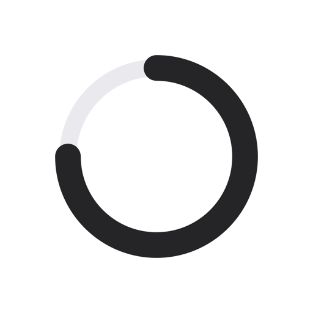

Ритм
Привычки на каждый день.
Откройте эту страницу в Safari на iPhone. После нажатия вернитесь на экран «Домой» — приложение появится там. Сборка 1.

Привычки на каждый день.
Откройте эту страницу в Safari на iPhone. После нажатия вернитесь на экран «Домой» — приложение появится там. Сборка 1.